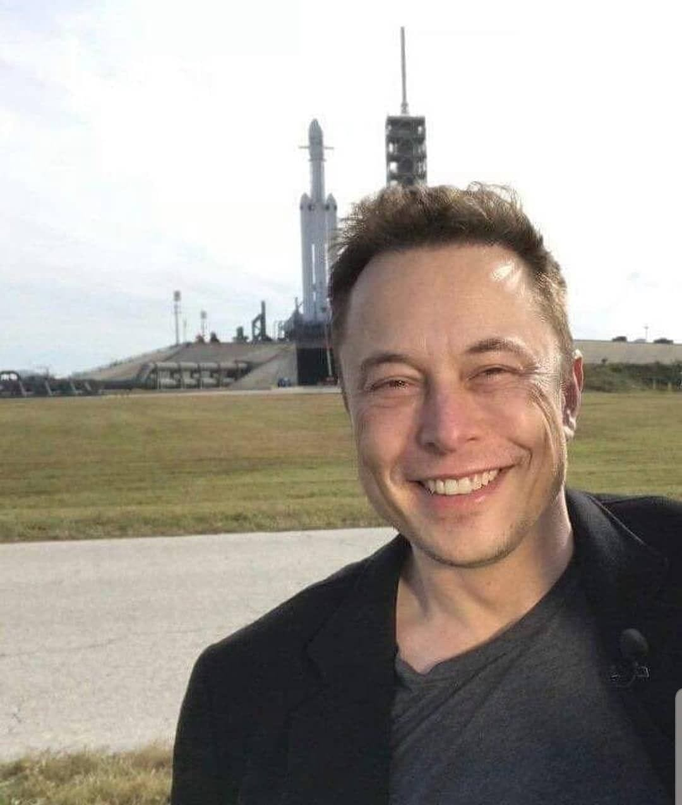
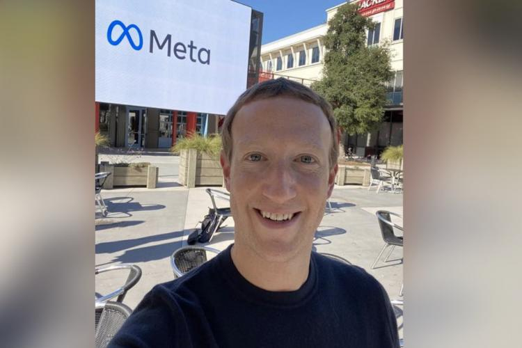

Testimonials
Marco Rifo's Web development
Pagina veramente fatta bene, ormai sono abituato ad essere sorpreso da Marco, che conosco molto personalmente. Quando in azienda abbiamo un problema troppo difficile da risolvere lo chiamo e lui mi risolve tutto. Solamente grazie a lui andremo su marte nel 2030. A proposito Marco se mi stai leggendo per favore rispondimi ho bisogno del tuo aiuto amo chat

Elon Musk
Studente alla Rifo's dev enterprise
Rifo è sempre stato un luminare per noi a Meta. Ci siamo conosciuti quando, al 27° ban del suo profilo, decisi di incontrarlo di persona per vedere quale fosse il suo problema. Da lì è nata un amicizia profonda, e Marco continua ad essere una fonte infinita di sapere per noi. Quando uscirà Meta VR sarà solamente grazie a lui. Sì, anche il sito è bellino

Mark Zucckercerkberg
Studente in Erasmus da Marte
Non sarei dove sono oggi se non fosse per Rifo. O Rifo King Player, come viene comunemente chiamato dagli amici. Le sue soffiate nel mondo della borsa mi sono state fondamentali.Veramente, brava persona. Nei suoi ultimi progetti mi ha rivelato che proporrà a Draghi (altro suo amico intimo) la sostituzione dell' Euro con il Dogecoin. Io, da sporco capitalista quale sono, ho già investito qualche miliardo in tale crypto. Quando inesorabilmente il progetto diverrà realtà, Rifo diventerà uno degli uomini più ricchi del pianeta, e dopo il 2030, considerando la colonia che ci sarà su Marte, più ricco della galassia. No cap

Warren "spilorcio" Buffett
Letteralmente il diavolo in persona